ПІБ
Олег Олегович Винницкий


Шановні учасники!
Просимо уважно заповнити ваші дані.
Звертаємо вашу увагу, що бали БПР можуть отримати лише лікарі.
Для отримання сертифікату з балами БПР необхідно пройти тестування та набрати не менше 70% правильних відповідей. Кількість спроб не обмежена.
Згідно вимог МОЗ тестування ОБОВ'ЯЗКОВО необхідно пройти до 23-59 сьогоднішнього дня.
Учасникам, які не пройдуть тестування бали БПР не нараховуються.
Сертифікати з індивідуальним номером та балами БПР надійдуть на електронну пошту протягом тижня.
C. Усуненні біоплівки та мінералізованих відкладень з кореня зуба
B. Поліруванні емалі
D. Формуванні ясеневого краю
A. Видаленні лише над’ясенного зубного каменю
C. Усуненні біоплівки та мінералізованих відкладень з кореня зуба
B. Поліруванні емалі
D. Формуванні ясеневого краю
A. Видаленні лише над’ясенного зубного каменю
A. 0–40°
D. 90°
C. 60–80°
B. 45–60°
A. Недостатній тиск
C. Надмірний тиск та неправильний кут
B. Надто тупе лезо
D. Використання ультразвуку
B. Симетричне лезо
D. Використання лише над’ясенно
C. Орієнтація на конкретні ділянки зубного ряду
A. Два ріжучі краї
C. Легкий тиск та постійне іригаційне охолодження
D. Вертикальні удари по кореню
А. Максимальну потужність апарата
B. Сухе поле
C. Короткі контрольовані тягнучі рухи
D. Кругові полірувальні рухи
Довгі горизонтальні рухи
B. Вертикальні рубаючі рухи
B. При щільних та масивних відкладеннях
При мінімальних над’ясенних відкладеннях
D. У пацієнтів з рецесіями
C. Для фінальної обробки кореня
A. Час процедури
B. Тип анестезії
C. Анатомія кореня та глибина кишені
D. Вік пацієнта
A. Досягненні ідеально гладкої поверхні кореня
B. Видаленні інфікованої біоплівки з мінімальною втратою цементу
D. Поліруванні дентину
C. Видаленні всього цементу кореня